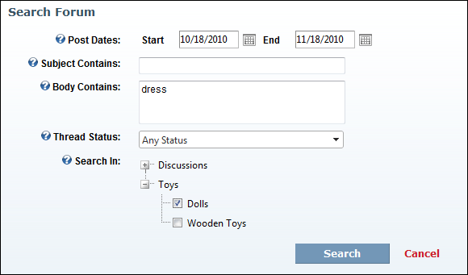

Searching One or More Forums
How to search for posts within one or more forums using the Forum module.
- Click the Search link located in the top center of the module. This opens the Search Forum page.
- At Post Dates set the dates you want to search through. This default setting is for the previous one month. If this range is suitable and you don't wish to set any further criteria, Skip to Step 4. To change this date range:
- At Start, click the Calendar button and select a new start date.
- At End, click the Calendar button and select a new end date.
- The following additional search criteria is available:
- In the Subject Contains text box, enter a word, phrase or number to limit the search to posts that contain the entered criteria in the subject.
- In the Body Contains text box, enter a word, phrase or number to limit the search to posts that contain the entered criteria in the body of the post. You can search for individual phrases, by separating them with a comma. E.g. (phrase1, phrase2, phrase3)
- At Threads Status, select a thread status to limit your search to threads of that status. Options are: Any Status, Unresolved, Resolved, or Informative. If a forum doesn't have a thread status set then this field is ignored.
- At Search In, click the Maximize
 button beside a forum group to view the related forums and against one or more individual forums.
button beside a forum group to view the related forums and against one or more individual forums.

- Click the Search link. The search results are now displayed and the search phrases, words are highlighted in yellow. If no results are displayed then no results were found.

Search Results Displayed in Forum Module